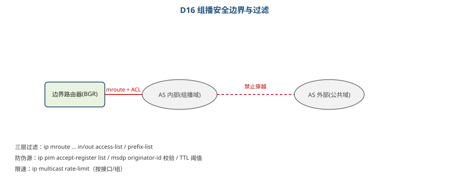

ch11 组播安全、过滤与限速
来源：iPexpert Ch13（P.13-1–13-19，Multicast Security and Advanced Features）、Volume II Ch1（P.100–P.105 边界防护）、Ch5（P.285–P.300 场景安全）、Williamson Ch14–15（L2 收敛）、Aweya Ch5.7（Register 过滤） 配图：D16 组播安全边界

学习目标
- 列出组播面临的安全威胁与对应的防护手段；
- 掌握三层/二层过滤（mroute ACL、IGMP ACL、组播路由限速）的配置；
- 说清 Register 过滤（防伪源）的工作方式与两种模式；
- 理解域边界的防护设计（BGR、Admin Scope、边界过滤）；
- 完成一份组播安全加固清单。
1. 组播的安全威胁模型
组播是单向广播型协议，天生适合攻击者放大：
| 威胁 | 描述 | 后果 |
|---|---|---|
| 伪源注入（Source Spoofing） | 攻击者以他人源地址向组发包 | 污染行情/劫持直播；客户端被误导 |
| 组播反射放大 | 攻击者伪造源为受害者 IP 向组发包，流量被复制到全网 | DDoS 放大（IPv4 组播可达面积极大） |
| 未授权加入 | 非法终端加入敏感组（金融行情、政府会议） | 内容泄露 |
| 组播流量洪泛 | 大量组播占用带宽 | 正常业务受损 |
| 二层组播泛洪 | 未开 Snooping 导致组播占满接入链路 | 同 VLAN 全部业务受损 |
| 控制报文攻击 | 伪造 IGMP/PIM 报文操纵树结构 | 劫持组播树、黑洞业务 |
根本原因：组播是"先到先得、无连接、无认证"，IPv4 组播甚至没有像组播 BGP 那样的控制平面验证机制。
2. 防护手段全景

| 层次 | 手段 | 作用 |
|---|---|---|
| 地址规划 | 239/8 私有段、SSM 段、GLOP 段分离 | 用地址本身做隔离，减少暴露面 |
| 边界控制 | Admin Scope 边界、Admin Scope zone | 自动剪断跨域组播 |
| 三层过滤 | ip mroute ... in/out access-list、ip multicast boundary |
在路由设备上按源/组/接口过滤 |
| 控制面过滤 | ip pim accept-register list |
只允许指定源向 RP 注册 |
| 接口过滤 | IGMP ACL、ACL 放行策略 | 限制谁能加入、谁能发控制报文 |
| 二层收敛 | IGMP/MLD Snooping、Fast Leave、端口隔离 | 防止二层泛洪 |
| 限速 | ip multicast rate-limit |
控制组播 pps/bps 上限 |
| 加密 | IPsec/GRE 隧道承载组播 | 机密性与完整性（但组播 + IPsec 性能代价大） |
| 源认证 | MSDP MD5 认证、MSDP originator-id | 域间对等体与源身份 |
3. 三层过滤详解
3.1 mroute 过滤
! 静态 mroute 出方向带 ACL：只允许特定源 → 组
ip mroute 10.1.1.0 255.255.255.0 10.2.2.2
ip mroute 10.1.1.0 255.255.255.0 GigabitEthernet0/1 255.1.1.0 255.255.255.0
- 可对 RPF 侧（入方向） 与 出方向 分别过滤；
- 出方向用 standard/named ACL 匹配（源地址、组地址、接口）。
3.2 边界定义（Admin Scope）
! 在边界路由器上定义边界
ip multicast boundary admin-scope
ip multicast boundary 239.0.0.0/8
admin-scope：使用默认的 239/8 边界语义；- 显式列表：自定义哪些组不能穿越边界。
3.3 Register 过滤（防伪源，最重要的防伪源手段）
! 仅允许 10.1.1.0/24 的源向 RP 注册
ip pim accept-register list SSM-SOURCES
ip pim accept-register from 10.1.1.0 list SSM-SOURCES
两种模式：
| 模式 | 行为 |
|---|---|
| accept-register list | 匹配列表 → 接受注册；不匹配 → 丢弃 |
| accept-register from |
指定"来自某来源的注册，按 list 过滤"（用于多 RP 分场景） |
价值：这是 ASM 环境中唯一能防止"任意主机伪造源注册到 RP"的有效手段。每个生产环境的 RP 都必须配置。
3.4 MSDP 防护
ip msdp peer 10.2.2.2 connect-source Loopback0 password <strong>
ip msdp peer 10.2.2.2 connect-source Loopback0
!
ip msdp filter-list 10 permit 10
ip msdp originator-id Loopback0
- MD5 认证防伪造对等体（现网仍有老设备只支持 password 哈希，注意强度）；
- filter-list 控制哪些源可从该 peer 接收 SA；
- originator-id 保证 SA 的可信归属（与 Anycast-RP 强相关）。
4. 二层防护
| 措施 | 配置 | 说明 |
|---|---|---|
| IGMP Snooping | ip igmp snooping vlan <v> |
二层组播收敛（最基础的防洪泛手段） |
| MLD Snooping | mld snooping（部分平台） |
IPv6 对应 |
| 限制 IGMP 报文来源 | ip igmp access-group <acl>（部分平台/方向） |
防止主机伪造 IGMP |
| 端口隔离 | switchport port-isolate / PVLAN |
防止组播横向扩散 |
| 边缘端口不信任 | ip igmp snooping vlan <v> mrouter interface never |
防止终端冒充路由器 |
5. 限速
ip multicast rate-limit 500 ! 每接口 pps 上限（部分平台）
ip multicast rate-limit 100000 10 ! 桶大小
policy-map PM-GROUP
class class-default
police cir 10000000 conform-action transmit exceed-action drop
- 设备默认对组播做 pps 限速（防攻击），但会误伤小包高包率业务（视频、遥测）；
- 业务上线前必须核对限速策略（ch01 案例 1-5 已记录该风险）。
6. 生产案例（6 例）
案例 11-1：行情源被伪造，业务数据被污染
现象：某交易日出现异常报价，溯源发现源地址被冒用。
定位：RP 上 show ip pim rp-address；检查 RP 是否配置 ip pim accept-register list；对比源服务器日志。
根因：RP 接受任何源的 Register，攻击者从内网任意主机伪造源地址注册。
处置：配置 ip pim accept-register list ALLOWED-SOURCES；同时在源服务器侧做 eBPF/iptables 限制可发组播的端口。
复盘："源白名单"是行情类业务的底线，RP 必须配置 accept-register。
案例 11-2：组播反射放大攻击
现象：某公网可达的组播地址被用作反射放大源，攻击流量打向受害方。
定位：边界设备上 show ip mroute 看到来自外部的大批组播；netstat -ano 显示源 IP 被伪造。
根因：边界未启用 Admin Scope 边界（239/8 自动剪断缺失），外部组播被引入内网再反射出去。
处置：边界配置 ip multicast boundary admin-scope；关闭不必要的组播监听；对边界做 ACL 限速。
复盘：边界设备必须默认拒绝组播入向，除非有明确业务需求。
案例 11-3：非法终端成功加入敏感组
现象：某终端未授权却收到行情流。
定位：接入交换机 show ip igmp snooping groups 出现该 MAC；检查 VLAN 内是否所有端口都允许组播。
根因：接入端口未做组播准入控制（未启用 IGMP Snooping 或未限制组范围）。
处置：启用 IGMP Snooping；在接入层限制允许的组地址范围（ACL 或 VLAN 划分）；敏感业务使用独立 VLAN + 独立组段。
复盘：组播的"加入"本质是二层广播行为，接入层是唯一可靠的准入点。
案例 11-4：组播业务被限速导致视频卡顿
现象：4K 直播在接入层正常，汇聚后卡顿；show policy-map 显示组播被 police。
定位：QoS 策略中组播落入 class-default，被默认 policer 限制。
根因：默认 class 的 policer 面向单播小包设计，组播小包率高导致超限。
处置：为组播单独建 class 并给足带宽与 pps。
复盘：QoS 设计必须显式包含组播流，默认策略往往是"隐形杀手"。
案例 11-5：MSDP peer 被中间人劫持
现象：SA 中出现不认识的源；MSDP peer 频繁重连。 定位：抓包发现 MSDP TCP 会话被中间设备劫持（未加密 + 弱认证）。 根因：MSDP 使用 password 认证（可被嗅探与暴力破解），未使用 MD5。 处置：升级为 MD5 认证；对等体间启用加密保护或专线。 复盘：MSDP/TCP 是跨域组播的攻击面，认证方式必须用最强可用选项。
案例 11-6：多租户 DC 中组播跨租户泄漏
现象：租户 A 的组播流在租户 B 的抓包中出现。 定位：EVPN route-type 10 与 VNI 成员列表不一致；L3 侧检查 VRF import/export。 根因：二层 BUM 泛洪路径未按租户收敛（缺 route-type 10），或 VRF Select 规则过宽。 处置：启用组播专用 NLRI；收紧 VRF 过滤；对多租户环境默认禁止跨 VNI 组播。 复盘：多租户组播隔离要做两层：L2（VNI/BD 隔离）+ L3（VRF 过滤）。
7. 组播安全加固清单（可直接用于方案评审）
□ 组播地址段规划：SSM(232/8)、私有(239/8)、GLOP(233/8) 分域使用，敏感业务独立段
□ 边界设备：ip multicast boundary admin-scope（默认拒绝跨域组播）
□ RP：ip pim accept-register list（源白名单）
□ RP：静态/动态 RP 发现双保险，且记录当前映射
□ MSDP：MD5 认证 + filter-list + originator-id
□ 接入层：全网 IGMP Snooping / MLD Snooping，配置 querier
□ 接入层：终端 IGMP 版本统一（≥v2，建议 v3）
□ QoS：组播单独 class，确认限速阈值满足业务 pps 需求
□ 监控：组播流条数/带宽/组数突变告警；mroute 表项数告警
□ 审计：静态 mroute 全部登记造册（含环路分析）
□ 变更：新增 PIM 域/组地址必须走变更评审，检查 IGMP 版本与 TTL
8. 自测清单
- 组播反射放大攻击的原理是什么？为什么组播放大倍数特别高？
ip pim accept-register list防的是什么攻击？两种模式差别？- Admin Scope 边界为什么能防住外部组播注入？
- MSDP 有哪几种认证方式？各自强度？
- 为什么"接入层"是组播准入控制最可靠的执行点？
- 组播限速的默认行为是什么？会误伤哪类业务？
- 多租户环境做组播隔离需要在哪两层同时下手？
9. 延伸阅读
- iPexpert Ch13（P.13-1–13-19）：Multicast Security and Advanced Features（Catalyst 过滤、Multicast Route Limiting、GRE 隧道承载组播）
- Volume II Ch1（P.100–P.105）：Protecting Domain Borders and Interdomain Resources / Firewalling IP Multicast
- Aweya Ch5.7（P.269–P.272）：Register 消息处理
- 延伸：
RFC 2365（Admin Scope）、RFC 7761 §4.5.1（accept-register）、RFC 3974（MSDP 认证）